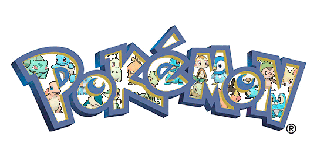
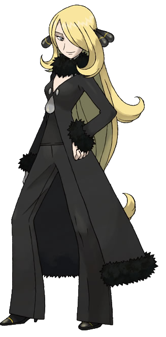

Pokemaniaco es un proyecto cuya idea es recopilar toda la información
existente sobre la franquicia de Pokémon, desde información de los
videojuegos, hasta del anime, manga y juego de cartas coleccionables, ect.
En esta página se suben las noticias más recientes o más destacadas de lo sucedido en lafranquicia.
Además de encontrar artículos para poder tener un mejor conocimiento de juego más información sobre
lospokemon, entrenadores e historia sobre la franquicia.para de servir como inicio para nuevas
personas que quieran entrar en esta franquicia

Lo mas Destacado
Articulo Destacado
Este año festejamos el 20 aniversario de pokemon desde la salida de pokemon rojo, azul y amarillo
Se cumplen 20 años del inicio de esa locura llamada Pokémon, un fenómeno que ha marcado a toda una generación. Es difícil no impactar cuando los tentáculos de la franquicia se extienden a medio mundo y adoptan todas las formas imaginables: películas, series, juguetes, figuras, juegos de cartas, videojuegos, tiendas temáticas, libros, ropa, peluches... Un negocio redondo que ha convertido a Pikachu en el Pokémon de los huevos de oro para Nintendo y Game Freak.
Pokemon Mas Destacado
Lucario |
 |
|
Lucario es un Pokémon de tipo lucha/acero introducido en la cuarta generación. Es la evolución de Riolu. Es un Pokémon adelantado por su aparición en la película Lucario y el misterio de Mew (ES), (HA), a partir de la sexta generación puede megaevolucionar en Mega-Lucario. El nombre Lucario es una variación de (Rukario), que se compone de una transcripción alternativa en Katakana de la palabra oráculo (orakuru). A su vez, el nombre occidental viene a ser un anagrama de la palabra oraculi (oráculo en latín). Es de tipo lucha/acero, Lucario tiene una habilidad especial conocida como vista aural que le permite ver el aura de las personas y de los Pokémon, con lo que también puede detectar dónde se encuentran. Además, gracias a esta habilidad tiene un movimiento característico, llamado esfera aural, que nunca falla. Comprende el lenguaje humano, aunque aparentemente estas características no se dan en todos los Lucario desde el principio. |
Mega Evolucion Mas Destacada
Mega Metagros |
 |
|
Metagross es un Pokémon de tipo acero/psíquico introducido en la tercera generación. Es la evolución de Metang, a partir de Pokémon Rubí Omega y Pokémon Zafiro Alfa puede megaevolucionar en Mega-Metagross. A partir de la sexta generación y solo durante los combates, Metagross puede megaevolucionar a Mega-Metagross. Su tipo no cambia, aumenta casi el doble de peso, y el doble de altura; su habilidad pasa a ser garra dura. Al megaevolucionar su cuerpo cambia notablemente, apareciendo en él más patas con grandes garras, la X de su cabeza se estiliza y cambia de color, además le aparece una púa en la parte inferior de la cabeza. Aumentan todas sus estadísticas menos los ps. |
|
Entrenador Mas Destacado
Cintia |
 |
|
Es la campeona del Alto Mando de Sinnoh. Cintia destaca con su traje negro y sus adornos negros con círculos amarillos en su cabello,similares a los sensores de aura de un Riolu o de un Lucario. Cintia tiene el cabello rubio y largo, con una cinta negra cuyos extremos sobresalen a ambos lados. Cintia aparece en Pokémon Diamante, Perla y Platino. Su equipo pokemon se conforma principalmete de:
|
Sabías Que...